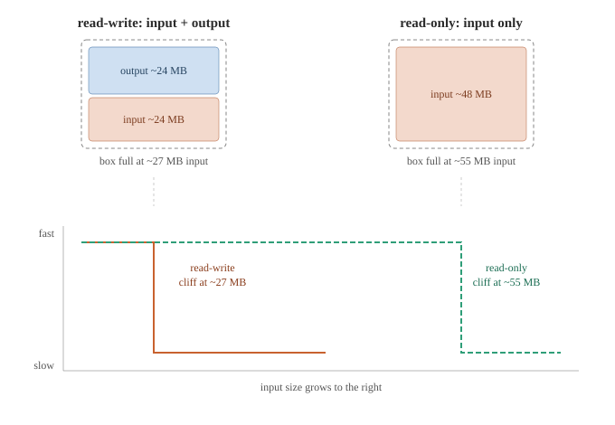
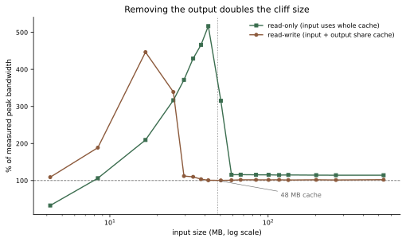

The puzzle
In my last post, I measured a simple softmax on an NVIDIA L4. Small tensors looked very fast, much faster than the GPU's real memory speed. That was a cache effect: small data fits in the L4's fast cache, so the reading looks quick.
But one number did not make sense. The speed stayed high, then dropped sharply (a cliff) at about 30 MB of data. The strange part: the L4's cache is 48 MB. The cliff came before the data filled the cache. Why would the speed fall while there was still room left in the cache?
I did not know. So I decided to find out. This post is that investigation: one wrong guess, one surprise, and a simple answer that I could prove.
The wrong guess
My first idea was about how softmax reads data. A safe softmax reads each row of numbers about two times: once to find the biggest value, and once more to use it. So I thought: maybe the data must stay in the cache long enough to be read both times. If the tensor is too big, the row is pushed out of the cache before the second read. Then the second read is slow, and the speed drops.
This gave me a clear prediction I could test. If reading more times causes the cliff, then reading more times should make the cliff happen at a smaller size.
So I built three small kernels. They all did the same simple, memory-heavy work, but they read each row a different number of times: one read, two reads, three reads. If my idea was right, the three kernels should cliff at different sizes, with the three-read one earliest.
The surprise
I ran the three kernels. I expected the three-read one to be about three times slower than the one-read one, because it reads three times more data.
They all ran at the same speed.
Reading three times was not slower than reading one time. This was strange. My first thought was that the compiler had removed the extra reads. That would be a normal optimization, since it may notice that reading the same data again is not needed. So I looked at the machine code the compiler produced (the PTX). The reads were there: one, two, and three read-instructions, exactly as I wrote them. The compiler had removed nothing.
So the reads happened, but they cost almost no extra time. Why?
The answer is about size. Each row is tiny, about one kilobyte. When one kernel reads its small row a second and third time, those reads happen a moment after the first one, while the row is still sitting in the fast cache. Reading data that is already in the cache costs almost no time. So re-reading one small row is nearly free.
This broke my first idea. If re-reading a row is nearly free, then the number of reads cannot cause the cliff. And it does not depend on the size of the whole tensor. A small row is always still in the cache when you read it again, no matter how big the full tensor is.
My guess was wrong. But being wrong told me something useful: the cliff is not about reading one row many times. It must be about something else.
The real answer
If the cliff is not about reading one row many times, what is it about?
I looked again at what softmax actually does with memory. It does two things: it reads the input data, and it writes the output data. Both the input and the output need to sit in the cache at the same time. And they share the same cache, the same 48 MB.
This changes the math. The cache is 48 MB. But softmax does not use it for input alone. It uses it for input and output together. The input and output are the same size. So when the input is 24 MB, the output is also 24 MB, and together they are 48 MB, and the cache is completely full. Grow the input a little more, and input plus output no longer fit. The cache overflows, and the speed falls off the cliff.
That is why the cliff comes at about 27 MB of input, not at 48 MB. The 48 MB cache was never holding just the input. It was holding input and output, each taking half.

The cache as a fixed box. Read-write must hold input and output together, so input can only reach about half the cache before it overflows. Read-only holds input alone, so input can reach the whole cache — and the cliff moves to twice the size.
The picture shows the idea. On the left, the read-write case: the cache box holds two blocks, input and output. Each can only grow to about 24 MB before the box is full. On the right, a different case: only input, no output. With no output taking half the box, the input alone can grow to almost 48 MB before the box is full, twice as far.
The proof
The picture on the right was a prediction, not yet a measurement. It said: if I remove the output, the input should be able to grow twice as far before the cliff. So I tested it.
I wrote a new kernel that only reads. It reads the full input row, but it writes almost nothing, just one small number per row instead of a full output. With almost no output, only the input uses the cache. If my idea was right, this read-only kernel should stay fast up to about 48 MB of input, twice as far as the normal read-write kernel.
I ran both kernels across many sizes and measured where each one hit its cliff.

Input bandwidth as a percentage of measured peak, against input size. The read-write kernel cliffs at about 27 MB; the read-only kernel stays fast until about 55 MB — almost exactly double, because removing the output frees half the cache.
The result is clear. The read-write kernel (brown) hits its cliff at about 27 MB of input. The read-only kernel (green) stays fast much longer and hits its cliff at about 55 MB, almost exactly two times bigger.
Removing the output doubled the cliff size. This is the proof. The output was taking half the cache all along. When it is gone, the input gets the whole cache, and the cliff moves to twice the size.
So the answer to the puzzle from my first post is simple: the cliff comes below the cache size because the cache holds input and output, not input alone.
The takeaway
This started as a small puzzle: why did the speed drop before the cache was full? The answer turned out to be useful beyond softmax.
When you measure a memory-bound kernel, it is easy to think only about the input size. But the cache holds everything the kernel touches at once: input, output, and any temporary data. If you forget the output, your idea of "when does it fit in cache" is wrong by a factor of two. The cache looks half as big as you expected, because the output is quietly using the other half.
So the lesson is simple. When you reason about cache and a bandwidth cliff, count the whole working set, not just the input. Input plus output. That one habit explains a cliff that looked impossible, a slowdown that arrived at half the cache size.
And there was a smaller lesson along the way, from the guess that failed. Re-reading the same small row many times costs almost no extra time, because it stays in the fast cache between reads. That is worth remembering too: not every "extra read" costs memory bandwidth. Only the reads that miss the cache do.